Queue
One ranked list of what wants you, read top to bottom and cleared.

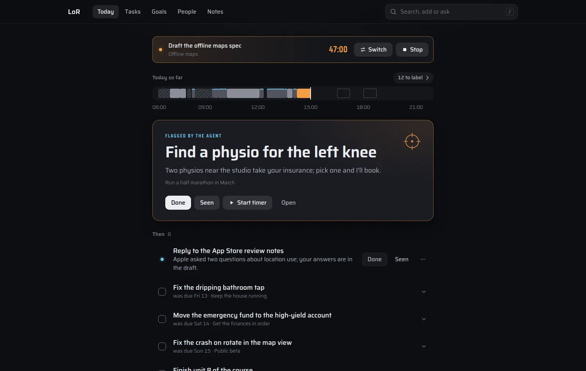

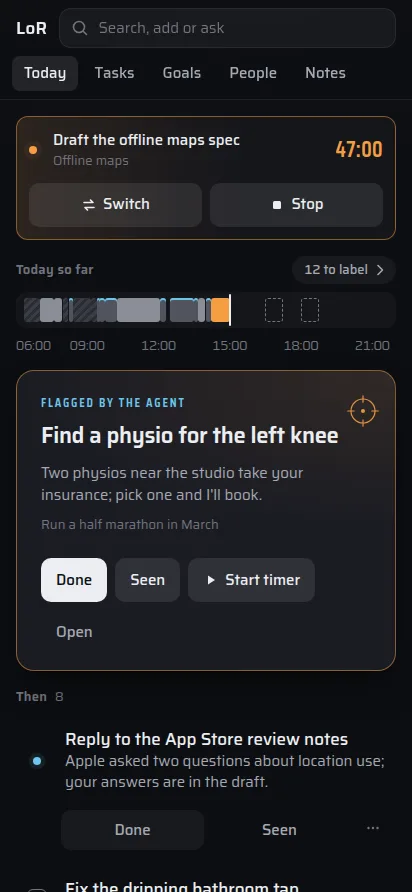

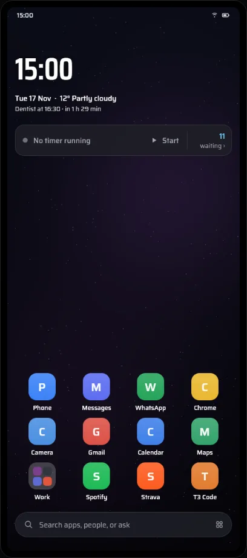

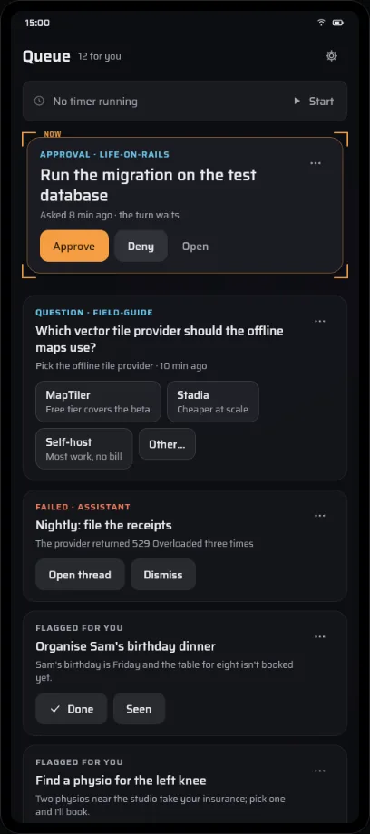
- Leads with
- The one thing as a large card on the dashboard; home's icons on the phone, with the queue one swipe left.
- Timer
- A bar at the top of Today, and a line on home.
- Details open
- In place: a row expands in the column; a card opens to a sheet on the phone.
- Needs from LoR
- Nothing new: it draws what LoR sends the phone today.
For
In Today, afternoon, at 1500 and 412, “Find a physio for the left knee” is unmistakably the thing to read.
GPT-6 Astra, on the dashboardHome/demo leaves the icons and search unobstructed; the single timer line is exceptionally economical.
GPT-6 Astra, on the phoneThe important continuity is where to look next: the same place.
GPT-6 Astra, on the phone, in motionQuiet at 1500 is the most beautiful empty of the four: "ALL CLEAR / Nothing wants you."
Grok 4.6, on the dashboardCompared with current's cover, where a huge TODAY widget eats the grid and the icons are grey discs, this is the first home that looks like a phone.
Grok 4.6, on the phone
Against
Queue's confident recommendation is now competing with my actual work.
GPT-6 Astra, on the dashboard“11 waiting” recruits every unlock into clearing a backlog.
GPT-6 Astra, on the phoneThe three-second approval window dominates an otherwise quick exchange.
GPT-6 Astra, on the phone, in motionYou will know the dripping tap is four days late before you know you have an hour and a half until the dentist.
Grok 4.6, on the dashboardYou came to open WhatsApp and the phone told you the bathroom tap is late.
Grok 4.6, on the phone
Worth stealing from it
Give Context Queue's inline single-choice answers with descriptions.
GPT-6 Astra, on the phoneInline question options on the cover card (MapTiler / Stadia / Self-host / Other), into Timeline.
Grok 4.6, on the phone
GPT-6 Astra's notes in full
GPT-6 Astra (Codex, gpt-6-astra, reasoning effort high)
Queue has the strongest immediate hierarchy, and the greatest risk of making LoR feel like a debt collector. I like its restraint more than its ranking.
Dashboard, what works. In Today, afternoon, at 1500 and 412, “Find a physio for the left knee” is unmistakably the thing to read. The explanation and Done/Seen actions belong together. Compared with current's competing arc, brief and small controls, this is a substantial improvement. I used Done in the live viewer; “Reply to the App Store review notes” became the lead. That is an intelligible transition between jobs.
Dashboard, daily irritation. The afternoon lead is the physio while the timer says I am drafting the maps spec. Both get amber emphasis. Queue's confident recommendation is now competing with my actual work. “Then 8” makes a miscellaneous backlog sound like an ordered plan. The quiet typography of “was due” is welcome, but the page still spends nearly all its attention on unfinished things.
Dashboard, harder than current. Understanding the remaining day at a glance. Current's arc names the events; Queue's little strip offers anonymous shapes. At 412, I can read the physio's explanation without difficulty, but cannot read the upcoming calendar from the strip. The Tasks and Maya detail stills also show the price of generous inline expansion: very long lists. Current's dense task list is less pleasant, but faster to scan across many dates.
Dashboard, steal. Give Panes Queue's restrained “was due” metadata. It communicates age without lighting up an entire list of routine tasks as trouble.
Phone, what works. Home/demo leaves the icons and search unobstructed; the single timer line is exceptionally economical. In agent-waiting, the approval has a clear title and generous buttons, and the next question exposes the option descriptions directly. This is much easier to parse than current's narrow, similarly framed cards. The sync-failed home still also puts a recognizable repair entry in an everyday location.
Phone, daily irritation. “11 waiting” recruits every unlock into clearing a backlog. On agent-waiting, even a failed receipts run and ordinary tasks join the same procession. The reticle can make administrative clearance feel like the purpose of the phone. Search-mixed also puts the apps near the top, a long reach from the keyboard on this tall cover screen.
Phone, harder than current. Seeing the whole evening from home: current lists Dentist, Portuguese and Focus time; Queue names only Dentist. Its inner thread still is readable, but keeps a large, repeated approval card beside the same approval heading in the thread. The extra space has not entirely become extra context.
Phone, steal. Give Context Queue's inline single-choice answers with descriptions. The tile-provider question is answerable where it appears instead of opening another layer first.
Evidence: dashboard Today was used only for the lead Done transition. Dashboard Tasks at 1100, Today at 1500/412 and Maya at 1500 were stills. Phone home, agent-waiting, search-mixed, sync-failed and thread-long/inner were stills only; I did not test their gestures.
GPT-6 Astra
Queue's motion makes me warmer toward its single-list idea. It gives clearing work a readable rhythm, although I still dislike turning the whole backlog into a home badge.
What it gets right on the phone. In approve-agent-waiting, the approval stays put during the cancellation window. Its buttons become “Approving…” and Cancel, with a shrinking progress line. After roughly three seconds, the approval leaves and the tile-provider question rises into the reticle. The important continuity is where to look next: the same place. The 50 ms strip shows the handover around 3.3–3.5 seconds rather than an unexplained replacement of the entire page. This is a useful bit of personality, not just ornament.
The move-demo recording is also reassuring. Camera first has a recognizable menu, then lifts into a drag while neighbouring icons make room, and finishes with “Moved Camera” and Undo. Arranging home looks like manipulating objects in place. It no longer looks like the invisible mode described in the current-design audit.
What would annoy daily. The three-second approval window dominates an otherwise quick exchange. I understand the safety it buys, and Cancel is honest, but repeated approvals could feel like repeatedly waiting for a lift door to close. Once the card clears, everything below it moves too. That is excellent when working from the top and distracting when already reading the next question. The reticle's insistence is more palpable in motion than in a still.
What becomes harder than current. Queue's replacement of current's compact card overview with a procession makes comparing multiple requests less stable: their positions change as the lead clears. The fold recording also shows a cost that the final inner screenshot hides. The cover sheet drops away as the inner composition takes over; folding back briefly exposes the queue before the sheet returns. The draft survives, but the reading surface is reconstructed rather than visibly carried across. I have not reviewed an equivalent current fold recording, so I cannot claim a measured motion regression there.
The idea to steal. Give Panes Queue's handover from a completed lead item to the next actionable item. The spatial continuity matters more than the reticle itself. It would make clearing an agent queue feel purposeful without adding another page.
Recordings reviewed. From lor-5fk6/gestures: approve-agent-waiting, move-demo, and fold-thread-long. I reviewed timestamped frames extracted across each video, the approval's original 50 ms strip, and the fold's full-size final frame. “half-written” remains in the reply field after the round trip. This is recorded browser evidence, not a judgment of physical Fold latency or touch feel. These phone recordings add no dashboard motion evidence.
GPT-6 Astra
Grok 4.6's notes in full
Grok 4.6 (Grok, grok-4.6, reasoning effort high)
Queue
The phone glance is the one I would keep. The dashboard is the one I would tire of. Queue knows how to stop talking when the list is empty, and it is the only concept that treats home as a launcher. Every other look at Today is a look at overdue life admin.
I used the dashboard live at 1280 (#/queue/?scene=afternoon): Done on the physio lead, People, Maya open. Phone: live Queue demo home in the lab viewer (the 1280×800 fill crops the icon grid; the 11-waiting chip is on screen). Cover, queue page, agent-waiting, search, sync-fail, quiet, and inner thread I saw as stills. Approve I saw in lor-5fk6/gestures/approve-agent-waiting/final.png.
Dashboard
What it gets right
One primary. Afternoon at 1500: the physio is a raised card with a reticle, Done / Seen / Start timer / Open on it, then "Then 8". Current's afternoon still is a decorative day arc and a morning brief; Needs you is below the fold, and the gallery tile even duplicates the whole page. Queue puts the thing that wants you in the middle of the screen.
The day strip is wordless and honest. Amber block at 15:00, empty boxes for the evening, "12 to label" as a chip. Relabel lives there. The timer is a bar you can Stop from People, which I used.
Quiet at 1500 is the most beautiful empty of the four: "ALL CLEAR / Nothing wants you." Next on the calendar is Dentist 16:30, and one soft link to the maps spec. The reticle goes grey. That is delight.
At 412 the same column still works. Actions grow. The strip still reads. This is the dashboard that survives a phone.
What would annoy in daily use
Every visit is a list of obligations. Afternoon 1500, after the lead: App Store flag, then seven due rows, four of them late, then the brief, then this week as a footnote. There is no picture of the day beyond a strip of rectangles. You will know the dripping tap is four days late before you know you have an hour and a half until the dentist.
The lead card is large. Physio copy, goal line, four actions. At 412, Open sits on its own row under the buttons. That is a lot of chrome for one flag.
People, used live after clicking Maya: the top-bar tabs sit on top of the person name. The notes and cadence below are readable. Opening a person works. The collision is ugly every time.
What it makes harder than current
Seeing the day's shape. Current's arc is theatre, and it still prints "Dentist 16:30" on a curve you cannot miss. Queue compresses the day into a strip you decode. Goals this week are four grey lines under the fold of the list. Current at least pretends the day is the subject of Today.
Ticking is easy. Understanding where you are in the afternoon is work.
Steal
The all-clear lead card, into Panes. Panes' quiet Today at 1500 still leads with "12 stretches of time to label" and a list of unnamed phone blocks. Queue knows the page is allowed to be empty.
Phone
What it gets right
Home is a launcher. Demo cover still, and live: 15:00, weather, Dentist in 1 h 29, a timer chip, 11 waiting, then icons, search at the thumb. Compared with current's cover, where a huge TODAY widget eats the grid and the icons are grey discs, this is the first home that looks like a phone.
The queue page (demo still, "11 for you") is the concept done properly: approval in the reticle, then flags with Done / Seen, then overdue. Agent-waiting cover adds the question with MapTiler / Stadia / Self-host / Other on the card, and the failed receipts turn. One tap for Approve. Three for a question, on the card, no sheet.
Inner thread-long still: list on the left, transcript on the right, Approve / Deny / Open in the thread header. Step 18 is fully readable. The other three concepts fail this.
Quiet queue page still: a tick, "Nothing wants you", Next Dentist 16:30, then what the agent is on, then later today. The empty is a place.
Sync-failed cover still: the 11-waiting slot becomes "Sync failed Fix". Icons untouched. Frequency and urgency are separated, as the brief asked.
Search-mixed cover still: field at the top, Play Store and Strava first, keyboard below. Apps stay visible while you type.
What would annoy in daily use
11 waiting on every unlock. That number is T3 plus flags plus due. 252 of 298 launches are search and icons. You came to open WhatsApp and the phone told you the bathroom tap is late. The badge will go stale in your attention, which is the opposite of a queue.
Approve toast in lor-5fk6/.../final.png covers the next overdue row: "Approved. T3 runs the command." over "Fix the dripping bathroom tap". The next thing in the reticle is the question, which is correct. The toast still sits on the list.
Search at the top of the overlay is a reach on a Fold cover. The brief put the field at the thumb. Panes did that.
What it makes harder than current
Current already hid Today in a widget, so Queue's home is easier for launching. The cost is the count. Opening the queue to tick a due task is a swipe (correct). Living with 11 on the chip is the daily tax current did not levy, because current did not count.
Steal
Inline question options on the cover card (MapTiler / Stadia / Self-host / Other), into Timeline. Timeline's agent-waiting still puts an Answer button on the question and hides the rest behind "3 more waiting". Queue lets you answer without opening anything.
Grok 4.6
Kimi K3's seat is open. It was asked for the read from a model made outside the US, and it is still owed. On 17 November OpenCode Go's 5-hour usage limit stopped it partway, with nothing written, and OpenCode's pay-as-you-go balance refused it; on 18 November, after the 5-hour window reset, Go's weekly limit stopped it again.
Timeline
The day is the spine: a route from waking to sleep, with now a third of the way down.

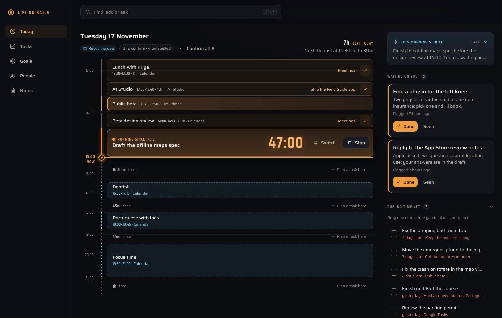

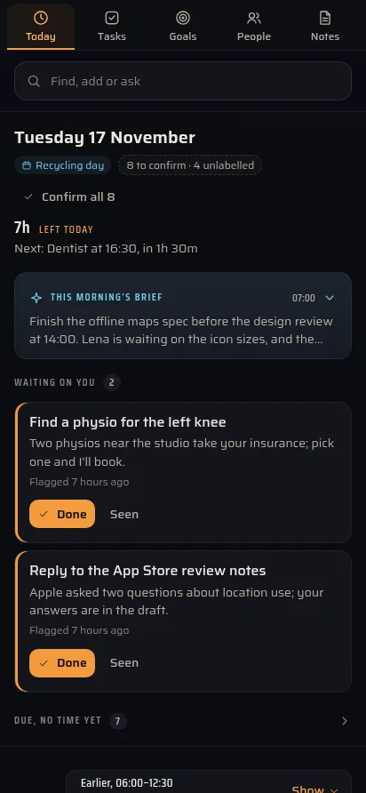

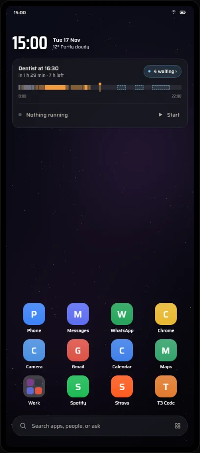

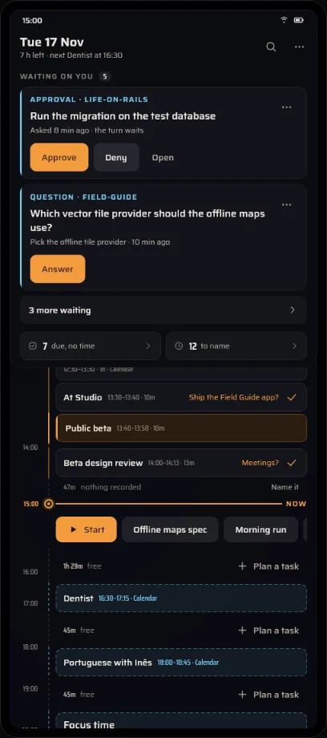
- Leads with
- Now: the running block, the time left, the next event.
- Timer
- The now line itself, and the day strip on home.
- Details open
- In a popover on the route; a bottom sheet at phone width.
- Needs from LoR
- The day's recorded blocks sent to the phone.
/device/homesends events and the timer, not the blocks before now.
For
This is a more actionable version of current's attractive but comparatively remote arc.
GPT-6 Astra, on the dashboardHome/demo is my favourite glance at the day: next event, time until it, remaining day and timer share one calm card.
GPT-6 Astra, on the phoneThis is a satisfying distinction between choosing a label and simply agreeing with one.
GPT-6 Astra, on the phone, in motionCurrent's arc is the same information as jewellery. This is the same information as a page.
Grok 4.6, on the dashboardA clear queue does not erase the day. I like that.
Grok 4.6, on the phone
Against
The report's worry is visible: an automatic account of the day starts to resemble homework.
GPT-6 Astra, on the dashboardThe very concept about “now” makes me scroll to now.
GPT-6 Astra, on the dashboardNaming one gap temporarily blurs the whole route and opens a substantial sheet.
GPT-6 Astra, on the phone, in motionUntil you hit Confirm all, the route is a questionnaire.
Grok 4.6, on the dashboardThe cover is still a lot of LoR for a phone you unlock to open Gmail.
Grok 4.6, on the phone
Worth stealing from it
Give Queue Timeline's home summary of time remaining and the next fixed event.
GPT-6 Astra, on the phoneConfirm all 8, into Queue and into Context.
Grok 4.6, on the dashboard
GPT-6 Astra's notes in full
GPT-6 Astra (Codex, gpt-6-astra, reasoning effort high)
Timeline is the most convincing expression of Life on Rails as a day, rather than a task manager. I would keep its view of the future more readily than its interrogation of the past.
Dashboard, what works. Today/afternoon at 1500 makes the transition from working now to Dentist at 16:30 immediately legible. The 1h 30m gap is useful space, not just empty pixels. Solid past blocks, a bright now line and outlined future events form a coherent visual language. I used Stop in the live viewer and the running control cleared. This is a more actionable version of current's attractive but comparatively remote arc.
Dashboard, daily irritation. “8 to confirm · 4 unlabelled” and “Confirm all 8” sit near the page title. The report's worry is visible: an automatic account of the day starts to resemble homework. Bulk acceptance makes the clicking cheaper; it does not make the guesses more trustworthy. The amber used for both suggestions and the active timer also gives uncertain history quite a lot of authority.
Dashboard, harder than current. Getting an overview without navigating a long route. Current compresses past and future into an arc and strips. Timeline improves readability by spending height. At 412, the brief and two waiting cards push the running timer far below the opening screen. The very concept about “now” makes me scroll to now. Its 1100 Tasks still also trades current's full editor for a compact popover, good for a date but less suited to sustained editing.
Dashboard, steal. Give Context Timeline's explicit free intervals. “1h 30m free” between two named commitments explains the suggestion to do something far better than a ranked backlog does.
Phone, what works. Home/demo is my favourite glance at the day: next event, time until it, remaining day and timer share one calm card. The strip is appropriately a summary here, with a detailed day page behind it. In agent-waiting, approvals still come first, so the organizing metaphor has not displaced urgent action entirely.
Phone, daily irritation. That same agent-waiting still shows two cards, “3 more waiting”, “7 due, no time” and “12 to name”, then the route. It is a lot of categories to interpret before doing anything. In thread-long/inner, the migration conversation sits beside guesses about studio time and lunch. Those are two simultaneous activities with little relationship to each other.
Phone, harder than current. Scanning all pending cards. Current's agent-waiting still exposes all five compact cards together, albeit below too much introductory material; Timeline shows two and folds the other three away. The route gains room at the cost of queue visibility. Home also loses current's written list of later events: the future strip is suggestive, not readable event detail.
Phone, steal. Give Queue Timeline's home summary of time remaining and the next fixed event. It would make Queue's home about available life as well as outstanding work.
Evidence: I used dashboard Stop in the afternoon viewer. Dashboard Today at 1500/412, Tasks at 1100 and Maya at 1500 were stills. Phone home/demo, agent-waiting, search-mixed and thread-long/inner were stills only. These notes do not assess touch or animation quality.
GPT-6 Astra
Timeline's strongest motion is the small local change on the route. It makes correcting time feel more concrete than the static “12 to name” count suggests.
What it gets right on the phone. In relabel-demo, the unnamed stretch immediately above now opens a label sheet. Choosing Offline maps spec lowers the sheet and leaves a solid named block in that same stretch. Undo restores the gap. The surrounding appointments remain landmarks throughout. The subsequent confirmation of the Beta design review changes that block in place, without another sheet. This is a satisfying distinction between choosing a label and simply agreeing with one.
The fold-thread-long sequence retains the migration conversation and the “half-written” reply through the cover-to-inner-to-cover round trip. The larger screen supplies a route alongside the conversation without demanding that the thread be opened again. That continuity is useful even though I still question whether the route is the best companion to this particular thread.
What would annoy daily. Naming one gap temporarily blurs the whole route and opens a substantial sheet. The result is local, but the journey there occupies much of the screen. Several uncertain blocks would mean repeated departures from, and returns to, the very timeline being repaired. The direct confirmation at the end is markedly lighter. Motion makes the report's concern about a day of guesses more specific: the burden depends on how often I must choose, rather than merely confirm.
What becomes harder than current. Keeping an uninterrupted overview while correcting time. Current's compressed day view is less readable in detail, but Timeline's phone sequence repeatedly exchanges the overview for a picker. The route makes the result easier to understand; the sheet makes the surrounding day unavailable while choosing. I have not watched a matching current relabel recording, so this is a structural comparison, not a claim that current animates better.
On folding, the sheet and pane do not read as one continuously transforming object. The background route becomes exposed during the change, then the conversation settles into its new position. Nothing in the reviewed sequence establishes lost work, but I would distinguish preserved state from an effortless visual transition.
The idea to steal. Give Context Timeline's local confirmation feedback for time: show the uncertain stretch becoming a counted block in place, with Undo restoring its former appearance. A toast alone does not explain the correction as well.
Recordings reviewed. From lor-j1fe/gestures: relabel-demo and fold-thread-long. I reviewed timestamped frames throughout both videos, the relabel recording's original 50 ms strip, and the fold's full-size final frame. These are phone-lab recordings; I have not extended the judgment to dashboard animation or physical-device smoothness.
GPT-6 Astra
Grok 4.6's notes in full
Grok 4.6 (Grok, grok-4.6, reasoning effort high)
Timeline
This is the one that looks designed. The vertical route, the now line, Confirm all 8, the colour jobs: tracked amber, planned cyan, unlabelled faint. It is also the one that bets your afternoon is a time-correction job. On the demo data, that bet is loud.
I used the dashboard live at 1280 (#/timeline/?scene=afternoon): Confirm all 8 (toast "Confirmed 8 suggestions", header became "4 unlabelled"), then the relabel popover on Portuguese with Inês. Phone: stills for demo cover, day page, agent-waiting, quiet day page, inner thread. I did not drive the phone mock live beyond opening the lab tab.
Dashboard
What it gets right
Afternoon at 1500 is a picture of 17 November. Now is a fixed line at 15:00. The running block is 47:00 on the maps spec, Switch and Stop on the block. Lunch, At Studio, Public beta, Beta design review sit above it. Dentist, Portuguese, Focus time sit below as dashed cyan. Gaps say "1h 30m free" and "Plan a task here". Current's arc is the same information as jewellery. This is the same information as a page.
Confirm all 8, used live, is the signature. One click, the route tells instead of asking. Undo on the toast. Relabel, used live on Portuguese: chips for Draft the offline maps spec, Public beta, Ship the Field Guide, Offline maps, Hold a conversation in Portuguese, Meetings, Something else. Split / change times / delete are collapsed. That is how uncommon stays accessible.
Waiting on you is a right column of two flag cards with Done / Seen. Due, no time yet, is seven rows you can drag onto a gap. The morning brief is a card, not a wall.
Empty day at 1500, 09:00 still: now line, "Nothing recorded yet", Start a timer here, calendar still drawn, flags still in the column. The page has a subject when the past is blank.
At 412 the composition is Timeline at its best. Waiting first (physio, App Store), Due collapsed, morning folded as "Earlier, 06:00–12:30 · 12 blocks · 9 want a label", then the route from lunch through now. Phone-width dashboard is a vertical day, which is what this direction is.
What would annoy in daily use
Until you hit Confirm all, the route is a questionnaire. Afternoon still: every past block wears a guess (Meetings?, Ship the Field Guide app?). Eight to confirm, four unlabelled, 12 to name somewhere. The brief's own risk is the one I felt: on a day that is mostly unlabelled, the route asks more than it tells.
The right column at 1500 is two jobs stacked: flags you must do, and seven overdue tasks. The overdue list truncates titles ("Move the emergency fund to the hig…"). You came to see now and you are reading four-days-late copy in the gutter.
Confirm all is a gift once. It is also a confession that the default state is nagging.
What it makes harder than current
Ticking a due task from Today. Current buries Needs you, and the rows are not even links, so this is still a gain on paper. In Timeline the seven due items are a secondary column, and at 412 they collapse to a chip. Current at least listed them as tasks (once you scrolled). Here the day is the page and the tap is a chore off to the side.
Finding a person or a goal is a rail click, same as Queue. The cost is attention: the spine is time, so LoR's other objects wait.
Steal
Confirm all 8, into Queue and into Context. Queue's afternoon strip has "12 to label" as a chip that opens a popover one block at a time. Context's afternoon still has "TIME IN NO CONTEXT · 1h 53 unnamed in 4 stretches · 8 guesses to confirm". Timeline lets you accept the afternoon in one gesture.
Phone
What it gets right
Demo cover still: clock, Dentist at 16:30, 7 h left, a day strip with now, 4 waiting, nothing running, icons, search. This is a glance. Current's cover spent the same pixels on a novel.
The day page (demo still) is the actual concept, and it is rich: WAITING ON YOU 4 as two cards, "2 more waiting", "7 due, no time", "12 to name", then the route with Start / Offline maps spec / Morning run on the now line. Quiet day page still: "Nothing waits on you", 0 due, 12 to name, the route still there. A clear queue does not erase the day. I like that.
Inner thread-long still: route on the left, thread on the right. Now stays visible while you read. That is the Fold used as a Fold.
What would annoy in daily use
The day page on a cover screen is a dashboard. Two waiting cards, then three chips that hide the rest, then a route whose morning is already off the top. Agent-waiting cover still: WAITING ON YOU 5, two cards, "3 more waiting", 7 due, 12 to name, then the route. An approval is never mid-scroll, which is correct. The cover is still a lot of LoR for a phone you unlock to open Gmail.
The question on agent-waiting is an Answer button. The options are a sheet away. Queue put them on the card.
Search follows Queue: field at the top. Fine for reading results. A reach for the thumb.
What it makes harder than current
Launching is easier than current (icons live). Ticking a due task is a trip into the day page and then into "7 due, no time". Current's widget at least put NEXT from the brief on home, badly. Timeline's 4 waiting is the right count. Getting to the bathroom tap is more taps than Queue's one list.
Inner-screen reading: the Approve / Deny / Open bar sits on the first lines of the transcript. Step 18's start is clipped. Reply is at the bottom and works. Reading the beginning of the thread does not. Queue's inner does this; Timeline's does not. Listed as a defect.
Steal
The 412 dashboard composition (waiting, then folded morning, then now) into Queue's phone queue page. Queue's queue is one ranked column and the day vanishes. Timeline's cover day page already knows the day is the spine. Steal the fold of "earlier" so a cover queue can still show now.
Grok 4.6
Kimi K3's seat is open. It was asked for the read from a model made outside the US, and it is still owed. On 17 November OpenCode Go's 5-hour usage limit stopped it partway, with nothing written, and OpenCode's pay-as-you-go balance refused it; on 18 November, after the 5-hour window reset, Go's weekly limit stopped it again.
Panes
A list and its detail side by side, so opening something never takes you away.

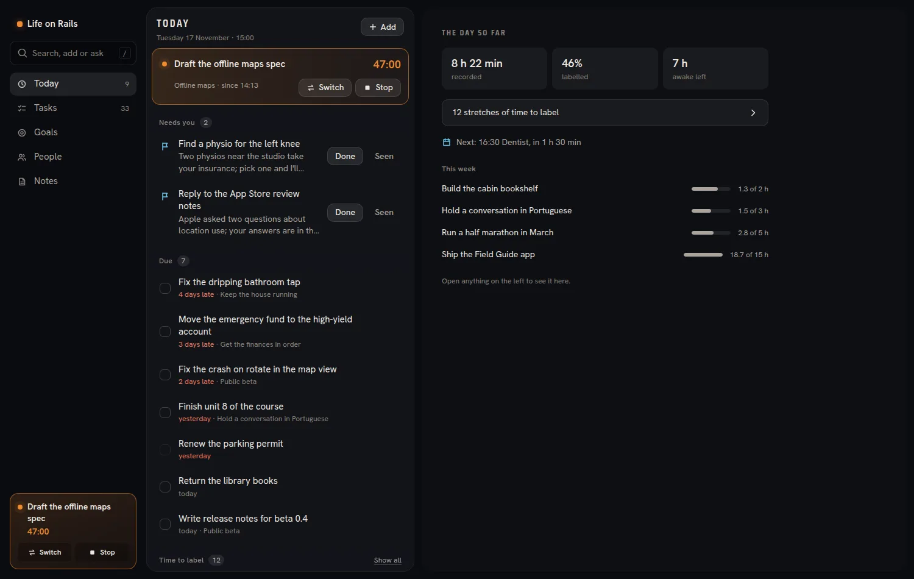

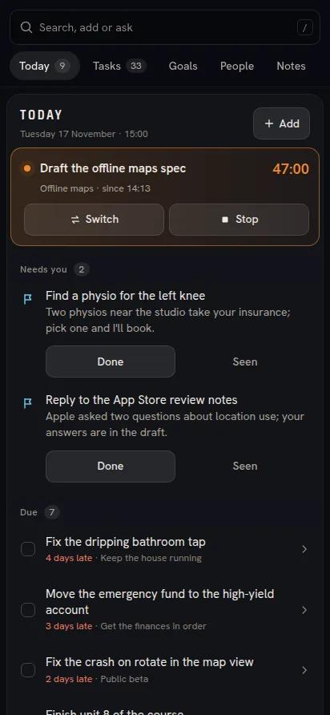

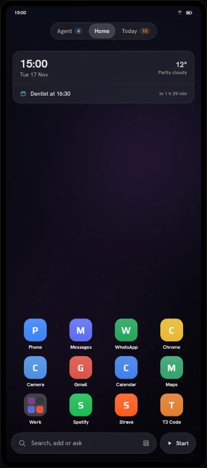

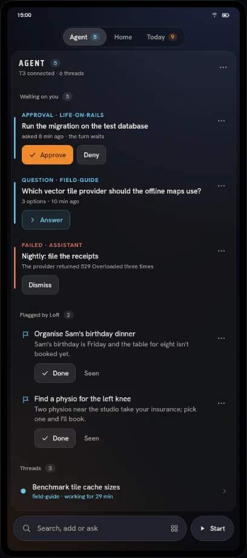
- Leads with
- The list of the page you are on.
- Timer
- A row at the top of Today's list, and a chip in the nav that stops or switches it from any page.
- Details open
- In the right pane on the desktop and the inner screen; in a sheet on the cover screen.
- Needs from LoR
- Nothing new: it draws what LoR sends the phone today.
For
Panes is the best foundation for an instrument you sit down to use.
GPT-6 AstraThe named Agent/Home/Today switcher is far more discoverable than current's page dots.
GPT-6 Astra, on the phoneThat is a coherent interaction, not simply a desktop pane squeezed onto a phone.
GPT-6 Astra, on the phone, in motionIt is the one that feels like software you already know how to operate.
Grok 4.6Panes is the one that made failure look designed.
Grok 4.6, on the phone
Against
That is consistency becoming repetition: the layout looks settled before it has earned the division of space.
GPT-6 Astra, on the dashboardI want more transcript and less repeated scaffolding.
GPT-6 Astra, on the phoneTransparency is also doing too much.
GPT-6 Astra, on the phone, in motionYou are in Queue with extra chrome.
Grok 4.6, on the dashboardQuiet Today's people list will be the identity of a clear afternoon.
Grok 4.6, on the phone
Worth stealing from it
Give Queue Panes' search field immediately above the keyboard with app results just above it.
GPT-6 Astra, on the phoneSearch at the thumb with apps nearest the field, into Queue and Timeline.
Grok 4.6, on the phone
GPT-6 Astra's notes in full
GPT-6 Astra (Codex, gpt-6-astra, reasoning effort high)
Panes is the best foundation for an instrument you sit down to use. It is less persuasive as the organizing rule for every glance and every screen size.
Dashboard, what works. Maya's People screen at 1500 makes list and detail feel like one workspace. The selected row stays visible, the person has a proper heading, and “Ask the agent before a call” is easy to discover. Today also brings needs and due tasks forward instead of placing them after current's large brief. The quiet surfaces and restrained frames feel more finished than current.
Dashboard, daily irritation. Today/afternoon spends a narrow left pane wrapping task titles while a large right pane contains a few statistics and a great deal of blank space. The timer appears twice. That is consistency becoming repetition: the layout looks settled before it has earned the division of space. At 412, Today becomes a long succession of tasks, individual time guesses, later events and statistics. It feels like an inventory to inspect.
Dashboard, harder than current. Reading the day's shape. Current's arc gives the afternoon a visible horizon; Panes mostly gives lists and numbers. The 1100 Tasks still also shows the detail covering and blurring most of its list. This fixes current's editor being stranded below everything, but forfeits the simultaneous comparison that made Panes attractive at 1500. I agree with the report about the chrome cost; it is visible, not hypothetical.
Dashboard, steal. Give Context Panes' persistent selected-row relationship when browsing People. Moving among people is a better use of a side pane than keeping unrelated waiting tasks beside every person's page.
Phone, what works. The named Agent/Home/Today switcher is far more discoverable than current's page dots. On home/demo, the separate Start control beside search is within easy thumb reach. The sync-failed still names both the problem and the 312 waiting readings without taking over the screen. In thread-long/inner, list and transcript genuinely suit the Fold.
Phone, daily irritation. On agent-waiting, the same count appears in the Agent tab, the AGENT heading and “Waiting on you”. These repeated labels spend space without increasing understanding. In the inner thread, the large approval heading and buttons repeat the selected card beside them. I want more transcript and less repeated scaffolding.
Phone, harder than current. The simple overview of the rest of today is now a separate destination; current puts all three later events on home. The cover also turns a thread into a half-height sheet. I folded the live thread-long inner view and unfolded it again: the open thread survived, but the cover presentation visibly makes reading subordinate to the list behind it. I did not test draft or scroll preservation.
Phone, steal. Give Queue Panes' search field immediately above the keyboard with app results just above it. The search-mixed still puts Strava close to the typing thumb. Queue makes the same app selection a reach to the top.
Evidence: dashboard observations are stills at 1500, 1100 and 412. Phone home, agent-waiting, search-mixed, sync-failed and thread-long/inner were inspected as stills; I additionally used the lab's Fold and Unfold controls on thread-long. This was a browser simulation, not a physical Fold test.
GPT-6 Astra
Panes benefits most from the motion evidence. Its half sheet is more useful than my still-based critique allowed, although it remains an uncomfortable reading surface for a long thread.
What it gets right on the phone. In sheet, Today slides into view under the persistent page switcher. Opening the crash task raises a half sheet and brings the selected row into view above it. Tapping the App Store flag replaces the contents of that same sheet. There is no close, return to list, reopen cycle. Expanding the sheet gives the detail more room; returning it to half height restores the list relationship. That is a coherent interaction, not simply a desktop pane squeezed onto a phone.
In risk, Back first removes the keyboard and then closes the thread sheet. These are comprehensible layers. In fold, the open thread becomes the right-hand pane and returns to a cover sheet with “half-written” intact. The evidence supports more continuity than the single fold I tried in my original pass established.
What would annoy daily. The sheet and the list can move together when a selected row is brought clear of the sheet. My eye has two things to follow: the rising detail and the shifting source. It is worth that cost when browsing several items, less so for a single quick lookup.
Transparency is also doing too much. In the fold's final frame, the underlying flags, thread list and dock are visible through the reading sheet. That is legible evidence of depth, but poor support for concentrating on a transcript. As the foreground and background move independently, their text becomes visual interference. I prefer the more decisive background separation in Queue and Context.
What becomes harder than current. A compact current card can be scanned as part of the page; Panes adds a spatial decision about half height, full height or dismissal. The risk recording makes the keyboard-then-sheet Back order clear, but also shows how many layers one thread acquires. The new system buys much better browsing and editing at the price of managing those layers. I have not watched matching current footage and am not claiming a comparative frame-rate result.
The idea to steal. Give Context Panes' ability to change the selected item while keeping one detail container open. On the inner screen especially, moving between related tasks or people should feel like browsing a workspace, not repeatedly visiting and dismissing destinations.
Recordings reviewed. From lor-fdtk/gestures: sheet, risk, and fold. I reviewed timestamped frames across each video, sheet's original 50 ms strip, and fold's full-size final frame. This changes my assessment of the phone's browsing model; it does not establish dashboard motion quality or physical Fold performance.
GPT-6 Astra
Grok 4.6's notes in full
Grok 4.6 (Grok, grok-4.6, reasoning effort high)
Panes
The Fold concept. List and detail, glass, actions on the row, Agent 4 / Today 10 on home. It is the one that feels like software you already know how to operate. It is also the one that brings the most chrome, and at 412 it becomes a long list of unnamed time.
I used the dashboard live at 1280 (#/panes/?scene=afternoon): opened "Fix the dripping bathroom tap" into the right pane (Done, Start a timer, due chips, Counts toward, Notes, More). Phone: stills for demo cover, agent-waiting, search-mixed, sync-failed, quiet Today, inner thread, stacked-pane still at 1100. I did not get a clean live drive of the phone canvas in this viewport.
Dashboard
What it gets right
Afternoon at 1500 is two panes of glass. Left: timer card with Switch / Stop, Needs you 2 with Done / Seen on the row, Due 7 with late in red. Right: the day so far (8 h 22 recorded, 46% labelled, 7 h awake left), 12 stretches to label, next Dentist, this week as bars. Nothing opened until I opened it. That is the brief, and it holds.
Row actions are the reason Approve can stay one tap in this direction. I did not need the pane to mark a flag. I used the pane for the dripping tap, and it is a proper editor: due chips, counts toward, notes, More collapsed. Uncommon is in the pane, under the common fields.
The look is the most "designed" surface language of the four after Timeline's route: rounded, frosted, selected row edged in amber, timer duplicated as a rail chip you can Stop from Goals. I like the chip. I dislike seeing the same 47:00 twice.
At 412 the left pane becomes the page, the detail a full-height sheet. The still of that sheet (catalogue) is a complete task. Phone-width dashboard has an entry point for search, which current does not under 1024.
What would annoy in daily use
Two timers. Afternoon 1500 and 1100: the running spec is a card at the top of Today and a floating chip on the rail. Same Switch, same Stop. On a small laptop that is clutter, and it is the risk the brief named.
At 1100 the right pane is gone. The list pane covers the page. "Time to label 12" and At Home 06:20 peek under the fold. The day-so-far, the week, the next event, all the reason to have two panes, vanish. You are in Queue with extra chrome.
Quiet at 1500 still says "Nothing wants you" and then lists twelve unnamed stretches with Yes on the agent's guesses. A clear queue is still a labelling shift. I would close the tab.
412 afternoon still is a spreadsheet: flags, seven due, then At Home / Instagram / Duolingo / Slack / Studio, each a row, Yes on some. The day-so-far cards and the week sit under that. Phone-width Today is a scroll, not a glance.
Stacked pane at 1100 still (task over its goal): the parent Goals list is a sliver of blur. Back is a chevron on the sheet. Nested layers will be how you lose your place.
What it makes harder than current
Seeing the day without opening something. Current's arc is always on Today, however silly. Panes puts the day in the right pane, then takes that pane away at 1100. Stop-from-anywhere is easier (the chip). Orientation on a 13-inch laptop is harder.
Goals "no data yet" in a pane is correct wording. Finding it costs a rail click plus a row click. Current's Goals is a wall; this is better, and slower.
Steal
Search at the thumb with apps nearest the field, into Queue and Timeline. Panes search-mixed cover still: field above the keyboard, Apps last (Strava, Play Store), so the thing you came to launch is next to the field. Queue and Timeline put the field at the top and the apps first, which reads well and misses the thumb.
Phone
What it gets right
Demo cover still: Agent 4, Home, Today 10 as a switcher. Clock, weather, Dentist, icons, search plus Start at the thumb. Home is a launcher with a count that is split. That split is the grown-up version of Queue's 11.
Agent-waiting cover still: Waiting on you 5, Approve / Deny on the approval, Answer on the question, Dismiss on the failed turn, flags with Done / Seen, threads below, dock at the thumb. This is the agent page as a list, which is what Panes is.
Sync-failed cover still is the best failure surface in the lab. A red line in the glance pane: "Phone sync failed · 312 readings waiting · Fix". Icons, dock, switcher, all untouched. Queue's chip is good. This is better, because the glance pane was already the place you look.
Inner thread-long still: cards on the left, thread on the right, search and Start still at the thumb. The Fold is the reason this direction exists, and the shell matches it.
Quiet Today cover still: "Nothing waits on you" as a row, then People 10 past cadence. The empty is honest about flags. It then fills the pane with people you have not called. That is a choice.
What would annoy in daily use
Today 10 on the home switcher. That is flags plus due, the same mix as Queue's 11, parked one tap away, which is kinder, and still a red badge on a launcher.
Quiet Today's people list will be the identity of a clear afternoon. Ten names, 60 days past, 45 days past. Cadence is uncommon. Panes put it where the day was.
Cover sheets at half height (the brief's signature) I saw in stills as full-height task sheets. If half-height is the daily move, Back and dismissal are the risk. I did not rest a sheet at half in a live drive.
What it makes harder than current
Inner-screen reading: Approve and Deny are large buttons over the first messages of the transcript. The first visible fragment is clipped ("column and an index…"). Reply works. Reading the start of the thread does not. Same break as Timeline and Context. Queue's inner keeps Approve in the header and Step 18 whole.
Ticking an ordinary task is on Today, one switcher tap from home, which current hid behind a missing panel. So the job is easier. Finding it on a cover that also wants to be a launcher is the new friction.
Steal
The sync-fail line in the glance pane, into Queue and Context. Queue already swaps the waiting chip for "Sync failed Fix". Context should put the same line on the home context card. Panes is the one that made failure look designed.
Grok 4.6
Kimi K3's seat is open. It was asked for the read from a model made outside the US, and it is still owed. On 17 November OpenCode Go's 5-hour usage limit stopped it partway, with nothing written, and OpenCode's pay-as-you-go balance refused it; on 18 November, after the 5-hour window reset, Go's weekly limit stopped it again.
Context
Everything about what you are doing now, gathered in one place: its tasks, page, people, agent work and time.

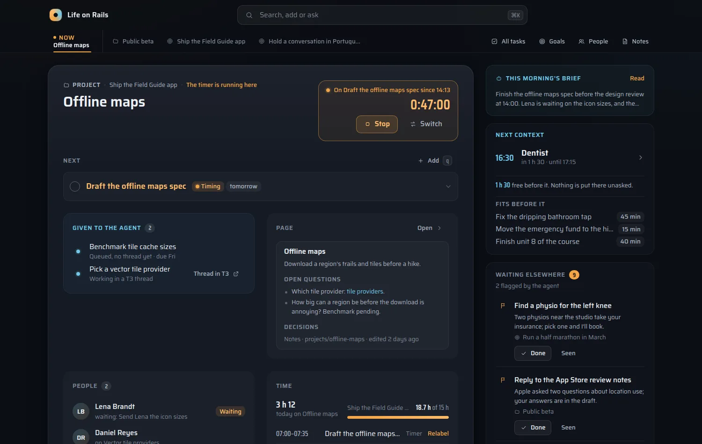

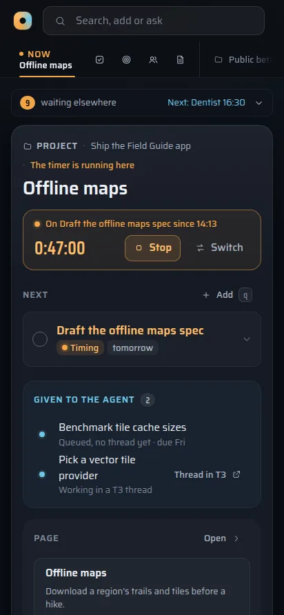

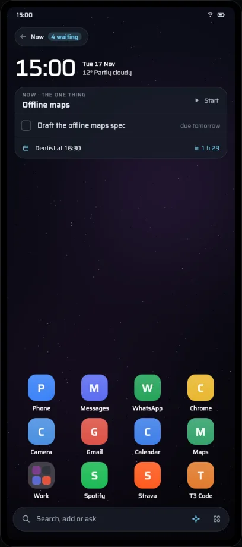

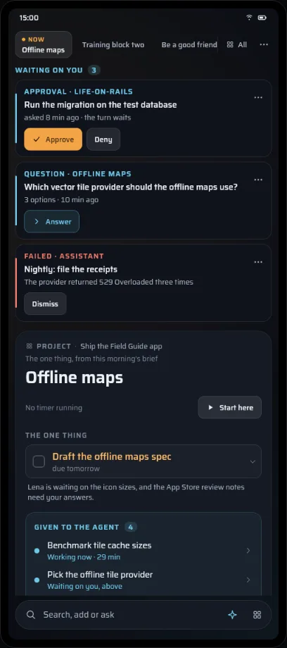
- Leads with
- The current context, chosen by the running timer or the agent's one thing.
- Timer
- The context's own header; starting a timer on something makes it the context.
- Details open
- Within the context: a task in place, a page or thread in the right half.
- Needs from LoR
- Goals, pages, week hours, task estimates and the agent's suggested links sent to the phone, and the agent recording which context a T3 thread belongs to. The prototypes make these up by title.
For
Context is the direction I most want LoR to grow into.
GPT-6 AstraThat is a materially better answer to “help me resume” than current's separate lists.
GPT-6 Astra, on the dashboardBrowsing has not silently changed the account of my work.
GPT-6 Astra, on the phone, in motionThis is the organisation LoR actually has, and the dashboard is the first time I have seen it drawn.
Grok 4.6, on the dashboardThis one is the one I would actually use, because the next task is ticked from home.
Grok 4.6, on the phone
Against
Its danger is that keeping the meaning organized becomes another job.
GPT-6 AstraThe design promises concentration but keeps advertising other obligations.
GPT-6 Astra, on the dashboardThe change is understandable, but the small reveal sequence adds ceremony to what may become a frequent navigation action.
GPT-6 Astra, on the phone, in motionYou will scroll inside the thing you are supposed to be in.
Grok 4.6, on the dashboardYou came to approve a migration and you are holding a project.
Grok 4.6, on the phone
Worth stealing from it
Give Queue Context's one directly tickable home task.
GPT-6 Astra, on the phoneNext context plus "fits before it", into Timeline.
Grok 4.6, on the dashboard
GPT-6 Astra's notes in full
GPT-6 Astra (Codex, gpt-6-astra, reasoning effort high)
Context is the direction I most want LoR to grow into. It can make opening the app feel like returning to something meaningful. Its danger is that keeping the meaning organized becomes another job.
Dashboard, what works. In Today/afternoon at 1500, Offline maps gathers the task, delegated work, project page, people and counted time. That is a materially better answer to “help me resume” than current's separate lists. The raised central surface feels cohesive, and the page excerpt gives it substance. Maya's person context likewise puts useful remembered information ahead of configuration.
Dashboard, daily irritation. The global sidebar keeps the morning brief, next event, possible filler tasks, waiting work and unassigned time beside the context. Maya's screen is still accompanied by the physio and App Store flags. The design promises concentration but keeps advertising other obligations. At 412 the many nested cards also become a long stack of containers; the hierarchy is coherent but rather ceremonial for one task.
Dashboard, harder than current. Reviewing work across projects by date. The 1100 All tasks still groups tasks into separate context cards, so a due-date comparison requires more eye movement than current's compact chronological list. “Loose ends” helps retrieve unlinked tasks, but cannot give them the richness of Offline maps. The report candidly says some links are made up for the prototype. That matters to this choice: the lovely central composition is partly a demonstration of data quality, not only layout.
Dashboard, steal. Give Panes Context's project summary: task, page, people and time together. Panes supplies an effective browsing structure; this would give its detail pane a better purpose than metadata alone.
Phone, what works. Home/demo turns the one thing into a usable action: Draft the offline maps spec has its own checkbox, next to a clear project and Start. Dentist remains visible. On this particular tall cover screen, the extra card uses otherwise empty wallpaper and does not squeeze the twelve icons. I agree with the report on that point. It is a considerable gain over current's static paragraph about the one thing.
Phone, daily irritation. Now/agent-waiting puts three T3 cards ahead of the context, and repeats the tile-provider work again under “Given to the agent”. On thread-long/inner, an unrelated database migration occupies the right pane while Offline maps remains on the left. Context is compelling when the relationship is real; it feels arbitrary when the two halves have no connection.
Phone, harder than current. Getting a compact survey of everything waiting. Current's agent page puts approvals, questions, failures and flags together. Context splits “Waiting on you” above the project from other waiting work further down. Its horizontal context names also ask for interpretation that the current home page does not: am I selecting a project, a goal, a person or an activity? The home card's precision can mask the mess outside it.
Phone, steal. Give Queue Context's one directly tickable home task. That preserves Queue's quiet launcher while making progress possible without entering its entire backlog. Keep the context attached so the task has a reason to matter.
Evidence: all Context observations are from stills: dashboard Today at 1500/412, All tasks at 1100, Maya at 1500; phone home/demo, agent-waiting, search-mixed and thread-long/inner. I did not operate Context or verify its gestures. The dependency on maintained links comes from its dashboard and phone Reports as well as the visible composition.
GPT-6 Astra
Context's motion makes its distinction between looking at something and working on it clearer. That is a more valuable quality than a spectacular transition would be.
What it gets right on the phone. In switch, Offline maps starts timing. All opens the contexts sheet; choosing Public beta replaces the project surface while the pending migration approval remains above it. Crucially, the new surface says the timer is still on Offline maps and offers “Switch here”. Only that second action moves the timer to Public beta. Browsing has not silently changed the account of my work. The timer's amber treatment then moves into the new context, and the confirmation names what happened.
The fold recording also improves my view of Context for reading. The conversation returns to a nearly full-height cover sheet, with “half-written” still in the composer. The fold-context recording keeps Public beta selected and returns to the scrolled portion containing tasks, Lena and time. Unfolding adds the project page alongside it. It feels like gaining a working area rather than starting a different session.
What would annoy daily. Switching through All uses a tall chooser and a substantial background blur before revealing the replacement surface. The 50 ms strip shows the new context heading and next task appearing before the lower groups finish appearing. The change is understandable, but the small reveal sequence adds ceremony to what may become a frequent navigation action. For a short glance at another project, I would want the content to settle quickly enough to read at once.
The top bar also changes as Public beta joins it, then becomes Now after switching the timer. That records useful history, but a frequent switcher must keep interpreting whether a tab denotes the active timer or a place recently visited. The motion helps explain that distinction without eliminating its mental cost.
What becomes harder than current. Maintaining a fixed mental map of where information lives. Current's home/agent organization is comparatively stable; Context replaces tasks, people and time together when the project changes. The benefit is relevance, the cost is reacquiring several regions at once. The pending approval staying in place is an important restraint on that cost. I have no matching current switching recording, so this is a comparison of interaction models, not measured animation quality.
The idea to steal. Give Timeline Context's explicit separation between navigation and switching the timer. Opening a future block or another project should let me inspect it; a separately named action should say when my work changes. The recorded “Timer on Offline maps” → “Switch here” → amber Public beta sequence makes that contract unusually clear.
Recordings reviewed. From lor-8aqh/gestures: switch, fold, and fold-context. I reviewed timestamped frames throughout each video, switch's original 50 ms strip, and fold's full-size final frame. This is recorded phone-lab evidence, not a new hands-on test or evidence of dashboard animation quality.
GPT-6 Astra
Grok 4.6's notes in full
Grok 4.6 (Grok, grok-4.6, reasoning effort high)
Context
The one that knows what you are doing. Offline maps arrives as a surface: next task, agent work, page, people, time this week, and the dentist as the next context with what fits in the gap. This is the organisation LoR actually has, and the dashboard is the first time I have seen it drawn. It is also the one that does not fit a laptop, and the one whose home card is already the right size.
I used the dashboard live at 1280 (#/context/?scene=afternoon): Offline maps Now, then clicked Public beta in the context bar. Phone: stills for demo cover, agent-waiting, inner thread, empty/quiet. Fold I saw in lor-8aqh/gestures/fold/final.png (half-written reply survived on the cover sheet).
Dashboard
What it gets right
Afternoon at 1500 is a workplace. NOW / Offline maps. Timer 0:47:00 on the spec, Stop / Switch. NEXT is the spec, due tomorrow, Timing. GIVEN TO THE AGENT 2, with Thread in T3. PAGE with open questions and decisions. PEOPLE: Lena Waiting, Daniel on vector tiles. TIME: 3 h 12 today, 18.7 of 15 h on Field Guide, Relabel on the unlabelled stretches. Beside it: morning brief, NEXT CONTEXT Dentist 16:30, 1h 30 free, FITS BEFORE IT three tasks with durations, WAITING ELSEWHERE 3 (two flags with Done / Seen, then overdue). TIME IN NO CONTEXT with Name it.
I used the Public beta switch. The whole surface turned. Switch here on the flagged App Store notes, Tasks 3 (crash 2 days late, release notes today, invite testers), empty Page ("No page in Notes for this yet"), Lena Waiting. The maps timer retreated to a chrome chip. That is the signature move, and it works.
Loose ends at 1500 still is the answer to the brief's risk. Tasks under nothing, each with "The agent thinks this belongs to Keep the house running" and Link. Parking permit, library books, dry cleaning, birthday card, essay, laptop backup. Unlinked work has a home. The agent proposes. You confirm.
412 afternoon still is a long scroll with a jump chip: "3 waiting elsewhere / Next: Dentist 16:30". The context stays first. The rest is reachable. This is the dashboard that makes sense of LoR's objects.
What would annoy in daily use
Now at 1280, used live, does not fit. Viewport 800px tall. People and Time sat below the fold. The raised surface is taller than a laptop content area. You will scroll inside the thing you are supposed to be in.
Waiting elsewhere still holds flags and overdue. The dripping tap is in the gutter of Offline maps, and also in FITS BEFORE IT. The same task in two places is a kind of honesty. It is also a kind of noise.
The context bar is a second navigation. Now, Public beta, Field Guide, Portuguese, then All tasks, Goals, People, Notes. Current had one rail. Context has a rail of objects plus a rail of pages. Switching is the point. Hunting is the cost.
Quiet is still a full workspace. "Where you left off" is the direction, so an empty queue does not empty the page. I respect that. I would still want Queue's all-clear on days I am not in a project.
What it makes harder than current
Getting to a task with no project. Current's Tasks is a list. Context puts it in Loose ends, which is right, and a click away from Now. If the links are missing, Today is a detour.
Seeing the whole afternoon in one glance. Current's arc is dumb and complete. Context's Time region is the project's day, not yours. Your day is Next context plus Waiting elsewhere plus Time in no context. Three places.
At 1280, People in the current context is below the fold. Opening a person before a call, the guess in the brief, is a bar click or a scroll. Current's People is a page. So is this, once you leave Now.
Steal
Next context plus "fits before it", into Timeline. Timeline already draws free gaps with "Plan a task here". Context names the three tasks that fit before the dentist, with minutes. That is the gap made useful. Put it on the route.
Phone
What it gets right
Demo cover still: 4 waiting as a chip next to Now, then a context card of three lines (Offline maps, Draft the spec with a tick, Dentist at 16:30), then icons, search at the thumb. The card does not steal the grid. Queue's home is cleaner. This one is the one I would actually use, because the next task is ticked from home.
Agent-waiting cover still: WAITING ON YOU 3 (approval, question, failed), then the Offline maps context under it. Approvals sit on the context. Home of Now is a queue and a workplace. Given to the agent 4 includes "Waiting on you, above". The loop closes.
Inner thread-long still: context stays left, thread right. You can see Lena, the one thing, the agent work, while you reply. That is the idea.
Fold evidence, lor-8aqh/gestures/fold/final.png: cover sheet of the same thread, "half-written" in the reply field. The draft survived. The required fold interaction holds in that recording.
What would annoy in daily use
The agent-waiting cover is tall. Three cards, then Offline maps, then Given to the agent. The one thing and the people sit under the fold of a cover screen. You came to approve a migration and you are holding a project.
Answer is a button that opens options. Queue put MapTiler on the card. Here the question is "3 options · 10 min ago" and a chevron.
Waiting elsewhere on the dashboard still mixed flags with overdue. On the phone, due tasks live in the context or they wait. A task with no project has to be Linked or it is a loose end you will not see on home.
What it makes harder than current
Launching is easier than current (icons live, card is three lines). Ticking the next task is easier than current (it is on the card). Ticking the bathroom tap, if it is not in this context, is a walk through waiting or Loose ends. Current's problem was that Today hid the work. Context's problem is that work without a link is elsewhere by design.
Inner-screen reading: Approve / Deny overlap the top of the transcript, same as Panes and Timeline. The first message is clipped. Reply is there. Reading the start is not. Queue's inner is the one that works. Listed as a defect.
Context inner on agent-waiting, from earlier stills in this pass, also crops the context body on the left when the thread is open. The workplace shrinks to a strip. The idea needs the left pane to stay a context.
Steal
Tick the next task from the home card, into Queue. Queue's home line is timer plus 11 waiting. Context's card is Offline maps, a checkbox on the spec, Dentist in 1 h 29. That is the one-line home the brief allowed, used for the thing you are in, with a tick. Queue should steal the tick and keep the icons.
Grok 4.6
Kimi K3's seat is open. It was asked for the read from a model made outside the US, and it is still owed. On 17 November OpenCode Go's 5-hour usage limit stopped it partway, with nothing written, and OpenCode's pay-as-you-go balance refused it; on 18 November, after the 5-hour window reset, Go's weekly limit stopped it again.
11 waiting, or 4?
On the same demo data, Queue's home says 11 waiting: T3's cards, LoR's flags and the tasks due today. Timeline's and Context's say 4: T3's cards and LoR's flags, without the tasks. Each critic was asked which count Sumeet would want on home.
I would put 4 waiting on home.
GPT-6 AstraOn a launcher, “waiting” should mean that opening it will reveal something requesting a decision or acknowledgement.
GPT-6 AstraSumeet wants 4 on home.
Grok 4.6A home chip that says 11 every unlock will be ignored, and then the 4 that matter will be ignored with it.
Grok 4.6Panes' split is the one I would ship: Agent 4 on the switcher, Today 10 one tap away, home still a grid.
Grok 4.6
Kimi K3's seat is open. It was asked for the read from a model made outside the US, and it is still owed. On 17 November OpenCode Go's 5-hour usage limit stopped it partway, with nothing written, and OpenCode's pay-as-you-go balance refused it; on 18 November, after the 5-hour window reset, Go's weekly limit stopped it again.
Current, for comparison
What ships today, in the same four screens and at the same moment.

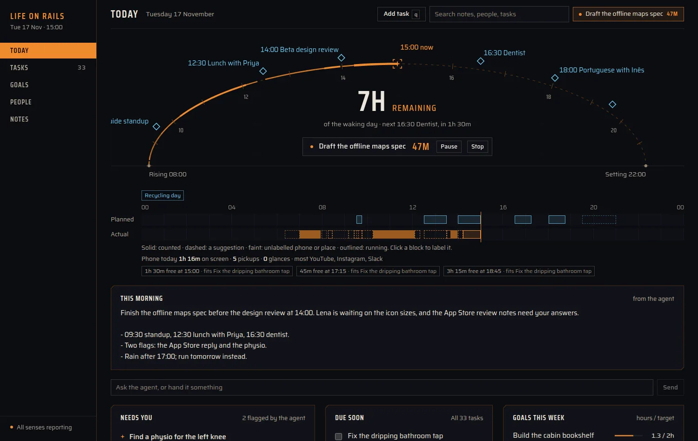

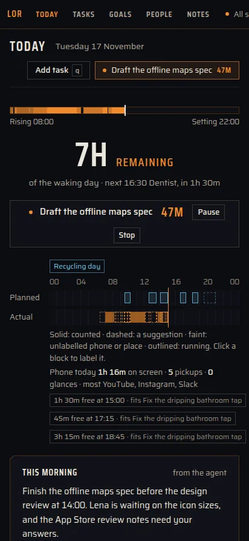

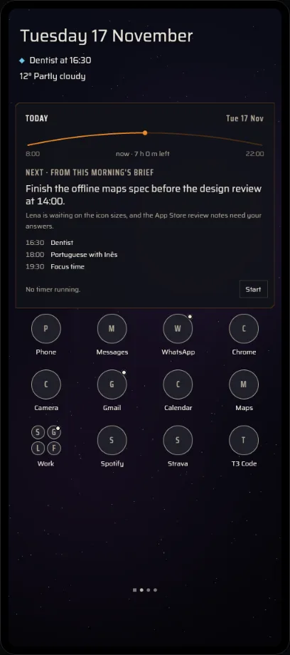

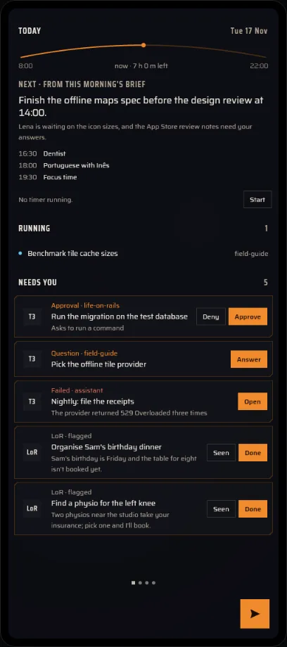
Defects the critics hit
The critics were asked for any defect that breaks one of the interactions the brief requires. Astra found none in what it used. Grok 4.6 reported one: on the inner screen in Timeline, Panes and Context, the Approve bar seemed to cover the start of a long thread.
It did not hold. The thread opens at its newest message, as a chat does, so the message at the top is cut by the scroll, not by the bar. Scrolled up in the published viewer on 18 November, all three show step 1 in full beneath the header. Queue's still happened to stop on a whole message. Nothing was changed, and Grok's notes stand as written.
GPT-6 Astra's notes in full
GPT-6 Astra (Codex, gpt-6-astra, reasoning effort high)
I would put 4 waiting on home. This is my recommendation from the stated aim, not a claim that Sumeet has already chosen it.
Queue's 11 combines the four attention items with seven ordinary due tasks. Its queue code explicitly appends due tasks to T3 cards and LoR flags. Timeline and Context's four describes the smaller set asking for attention. Both numbers can be arithmetically defensible; they make different promises.
On a launcher, “waiting” should mean that opening it will reveal something requesting a decision or acknowledgement. A bathroom tap becoming another day overdue has not created another interruption. Counting the backlog makes the badge sticky: it can remain large even after every agent has been unblocked. Eventually it teaches the owner not to look. Four preserves the usefulness of that signal. Keep the seven tasks reachable in Today, and allow one chosen task on home as Context does. Do not hide them to manufacture calm, or label the four “all tasks”.
The different count in agent-waiting is not contradictory evidence: that is another fixture. The stills there show Queue at 12 and Timeline/Panes at five. The comparison above is home/demo, as asked.
Required-interaction defects encountered: none confirmed in my limited hands-on sample.
I used Queue dashboard Today/afternoon → lead Done; the App Store item replaced the physio. I used Timeline dashboard Today/afternoon → Stop; the running Stop control cleared. I used Panes phone thread-long/inner → Fold → Unfold; the open migration thread returned in the inner detail pane. I did not type a draft or test scroll persistence, so that is not a pass for the full fold requirement. The other interaction claims in the implementation Reports are not my test results. I did not run the full required-interaction matrix, watch the gesture recordings, or operate a physical phone.
One evidence limitation: current's 1500px afternoon dashboard capture visibly repeats a band of the page. The reports identify repeated-band captures as a screenshot-tool problem. I used the intact upper portion for comparison and have not classified that as a product interaction defect.
GPT-6 Astra
Grok 4.6's notes in full
Grok 4.6 (Grok, grok-4.6, reasoning effort high)
The home count
Sumeet wants 4 on home.
4 is the T3 cards and the people-waiting that change what he does before he opens an app: an approval, a question, a failed turn, a flag the agent put in front of him. That is the count Timeline and Context put on the cover (Timeline: "4 waiting" on the day strip; Context: "4 waiting" next to Now). It is also Panes' Agent 4.
11 is Queue mixing those with due tasks (the dripping tap, the emergency fund, the crash, unit 8, the parking permit, the library books, release notes). Those are real. They do not belong on the launcher. 252 of 298 launches in the measured week were search and icons. A home chip that says 11 every unlock will be ignored, and then the 4 that matter will be ignored with it.
11 belongs on the queue page, where Queue already prints "11 for you". Panes' split is the one I would ship: Agent 4 on the switcher, Today 10 one tap away, home still a grid. Timeline's 4 on the strip is the same idea with more taste.
Stills are the source of truth for these numbers. The live dashboard store in this session had already taken physio to Done and confirmed eight guesses, so later live scenes showed smaller counts.
Defects that break a required interaction
Only breaks of "Interactions that must work in every concept". Everything else stayed in the concept notes.
1. Read a thread on the inner screen: Approve bar covers the start of the transcript
- Concepts: Timeline, Panes, Context. Queue is clear.
- Surface: Phone, Fold inner screen, state
thread-long. - Interaction: "Read and reply to a thread on the inner screen."
- Steps: Open
thread-longinner. Look at the right-hand transcript without scrolling. - What happened: I saw this in stills, not as a live tap:
timeline-thread-long-inner@1000.png,panes-thread-long-inner@1000.png,context-thread-long-inner@1000.png. Approve / Deny (and Open, on Timeline) sit on top of the first agent message. The first visible text is a clipped continuation ("so it runs in well under a second…", "column and an index…"). The reply field is present and a half-written draft survived Context's fold recording. Reading the beginning of the thread is what fails. - Queue, same state:
queue-thread-long-inner@1000.png. Approve / Deny / Open are in the thread header. Step 18 is fully readable. That is the working version of the interaction.
No other required interaction broke in what I used or in the stills I opened. Fold keeping a half-written answer held in Context's lor-8aqh/gestures/fold/final.png. Sync-fail was visible on Queue and Panes covers. Approve, search, and tick had working surfaces in the stills and in the dashboard live pass.
Grok 4.6